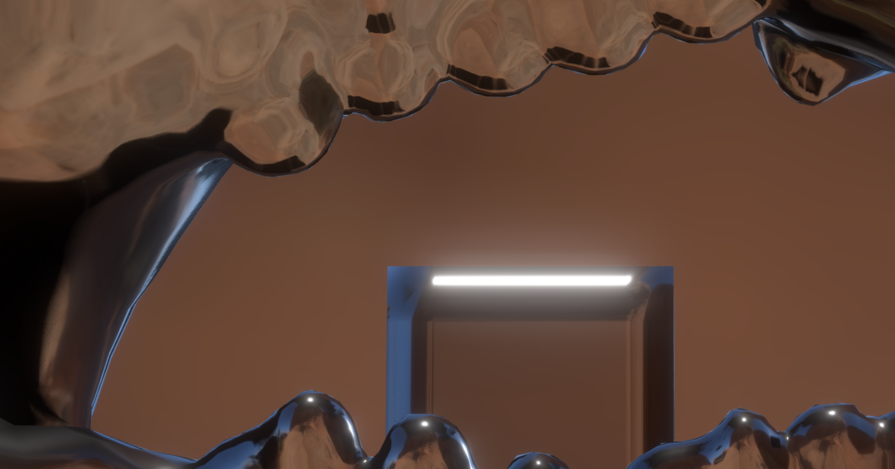
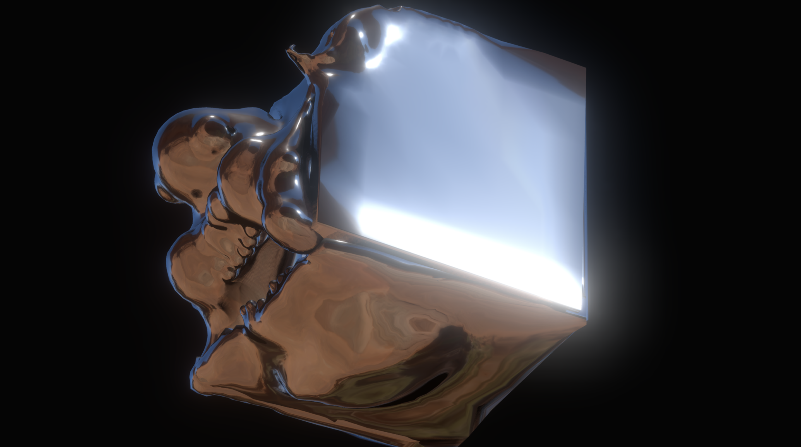
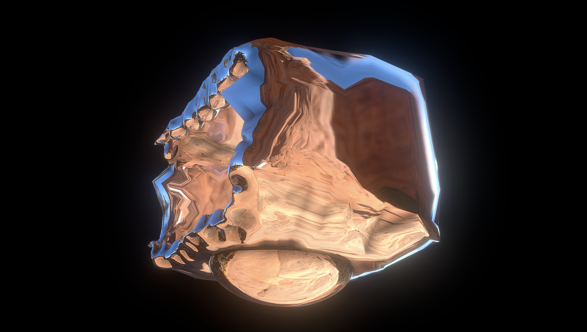
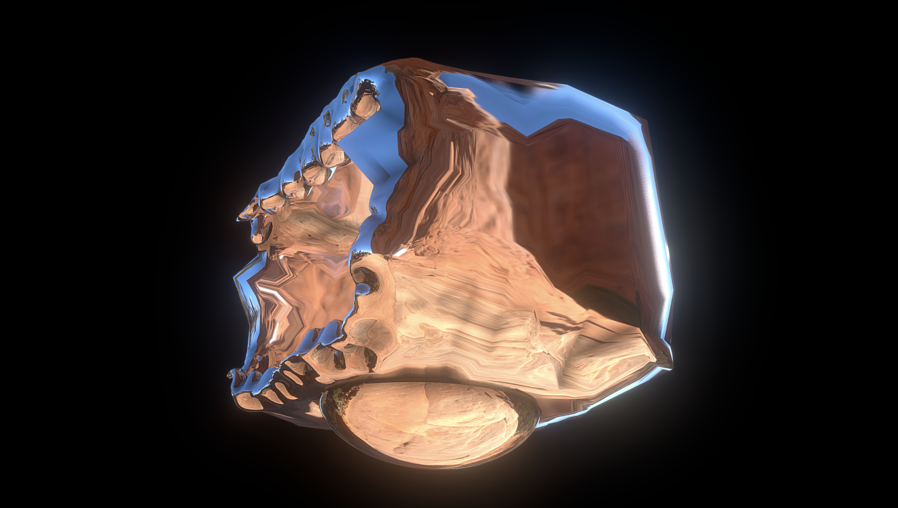
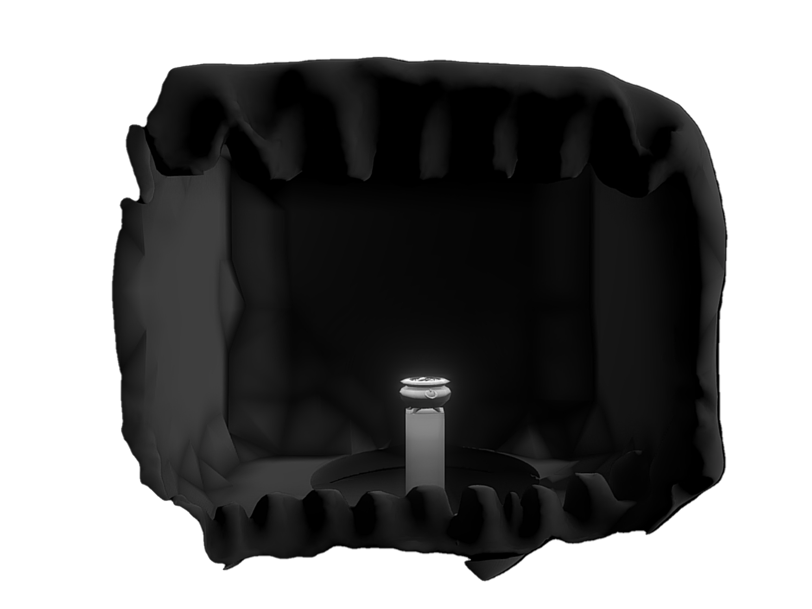
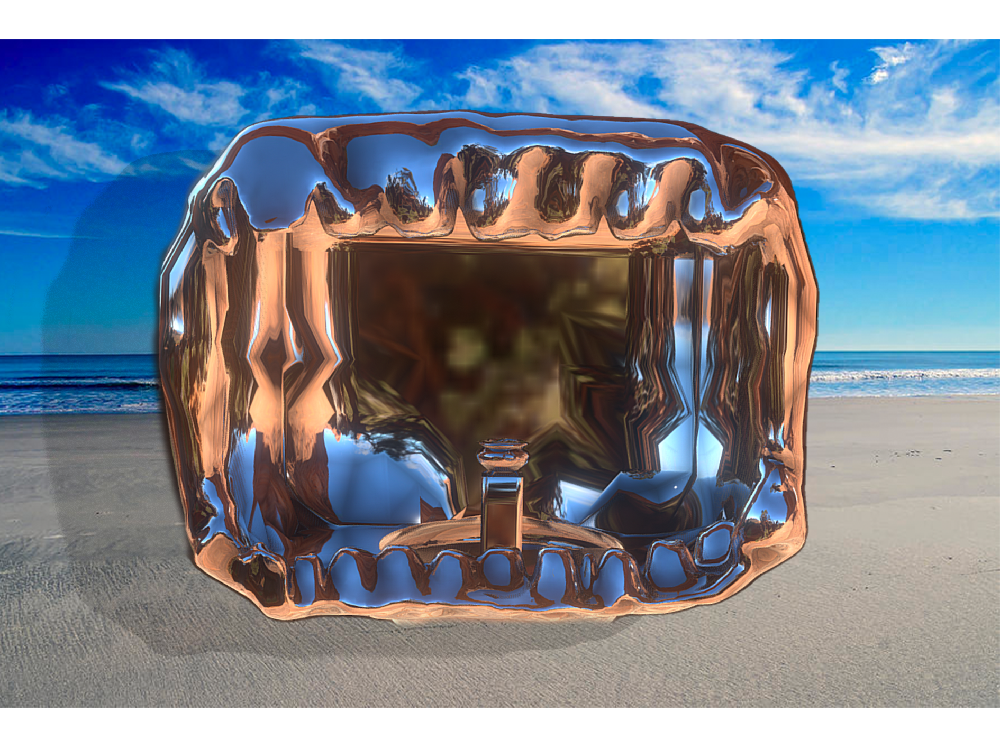
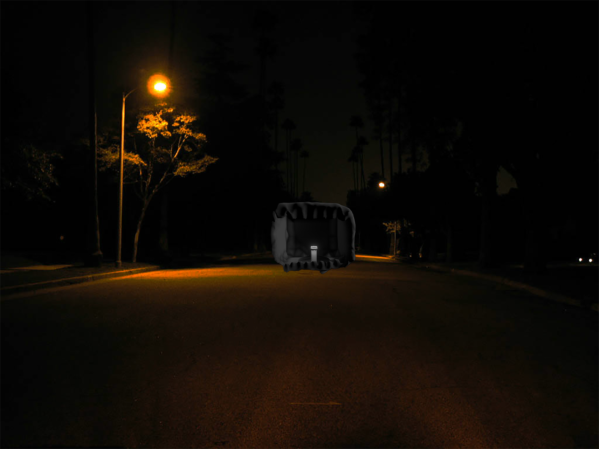

Greed




 




Description
Among the seven deadly sins, I chose Greedy as my topic because greedy is inside all of us. For this project, I chose DMA and it will be an installation art. I used Meshmixer, an 3D modeling design software to create the model of this room, and used sketchfab to add the glossy out look to it.
I want the audience to walk in the room to touch the gold pot and when they are close to the gold pot, they will drop and slide down to a room. The reason why I want them to slide down when they are near the gold pot is because greed is a way to get you to the bottom of your life. On the other hand, greed can make you successful, because it gives you the motivation to get to the thing you want, but it can also make you lose the things you love. The whole point is not to get too greedy.
This room has a glossy metal look and I chose metal as the out layer, because it would look like coins in another hand. In my own experience, money is the most needed thing to some people. The glossy metal can also let you see your own reflection when you drop down to the space, it’s like a mirror of yourself and reminding you what greed can make yourself look like. I’m sure that most people will be shocked and horrified when they are dropping down to space, so seeing yourself in a difficult position may as well be a hit of what greed can be done to one person. I also put a central light to the golden pot, so audiences can focus on the golden pot more and not beware of the trap.
Although greed can be a disadvantage, it can also be an advantage. You have to use it correctly and be careful with your greed. Like Rusty Eric said, “ As long as Greed is stronger than compassion, there will always be suffering.”